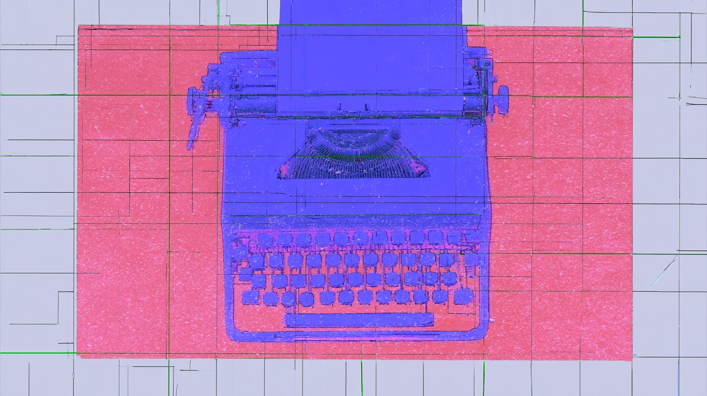

Ann Powers, NPR Music's resident critic-historian, uses the question at the center of a 2026 Twisted Teens song (Is it real?) to cut through this year's authenticity panic. The sharpest move: she refuses to treat AI slop as a rupture. Digital recording "killed" music in 1979, computers "faked" Paula Abdul's vocals in 1990, Woodstock was "a treasure and a fraud." Every decade stages its own crisis of the real, and listeners' ears keep adjusting.
Keith Collins and the Times built an interactive around a simple gut-check: here's a Diane Butler country song, could you tell it's machine-made? Most can't. A Deezer survey found 97 percent of listeners can't distinguish AI from human music. The reporting maps nine platforms and the labeling is a mess: Spotify badges only full AI "personas," Apple's tags are invisible to you, Amazon has no plan. Emily Stamatis made an AI track her anthem, then got told she'd been catfished.
Ted Gioia has spent five years predicting exactly this: Universal Music, the biggest label on earth, now talking to private equity after its stock dropped 29% this year. His diagnosis is blunt. Corporate entertainment is collapsing across the board, from UMG to Netflix to Spotify, while indie creators thrive on YouTube and Bandcamp. He lists seven self-inflicted wounds, chief among them labels that became IP management firms run by lawyers who, he suspects, no longer actually love music.
01Music & SceneWriting about music and the culture around it. Criticism, profiles, interviews, and scene reporting, selected for insight rather than news value.
NPR Music reads Jay-Z's 2027 Super Bowl headlining slot (secured via Roc Nation's own NFL deal) as the logical endpoint of a career spent as cultural broker: the man who unlocked Barclays Center and gave Goodell cover on Kaepernick. The sharpest irony is that Jay-Z in 8 has him condemning 'house Negroes' and race hustlers without recognizing his own reflection.
Zinstrel maps 74 of the 75 nominated works in AI music's first major awards against SIQA's creator-disclosed tiers and finds that 72% are AI-Assisted, 24% Hybrid, and just 4% fully generated — meaning the community is rewarding human creative contribution, not prompt-and-pray output. The gap it reveals: Deezer and the IFPI/RIAA labeling program judge finished audio; SIQA asks what went in.
POW's 20th-anniversary reading of Back to Black insists the album can't be taken at face value: Winehouse describes patriarchal mistreatment with a scientist's inevitability, never didactic, the tension between understanding and action making the songs potent.
Clash builds its case through contradiction: the corrido has always been a sonic newspaper for those outside official history, and Cano updated it for YouTube and Spotify, putting six tumbados artists in the global top 40. The sharpest beat is his double standard point: when Netflix dramatizes El Chapo it's tolerated; when marginalized Sonora kids narrate the same war, states ban it.
Tuma Basa makes the case for DC as a curation mecca, built on the DMV's collision of transplants, diplomats, immigrants, and natives all sharing the same clubs and stations. He threads the history: Ahmet Ertegun's desegregated embassy jam sessions, Melvin Lindsey inventing Quiet Storm at WHUR, Go-Go's live infectiousness, and DC as the per-capita capital of Africans in America.
An interview with Nigerian artist JeriQ discussing his decision to remain based in Enugu rather than Lagos, his artistic integrity in refusing to compromise his street music sound for mainstream appeal, and his experience with a major distributor who rejected his album Billion Dollar Dreams for not fitting Afrobeats conventions.
First Floor reads today's "Sónar Is Dead" announcement, splashed across La Vanguardia print ads, as the opening move of a rebrand, not a funeral. The theory: with the KKR boycott stain unlikely to wash off and the original founders gone, Superstruct bets that short public memory lets it bury the baggage and relaunch a Barcelona festival under a cleaner name.
Reviled on release as cake with no nuts and worth one Rolling Stone star, Aphex Twin's Drukqs is now his most-streamed work, pulling 50 million more monthly YouTube plays than Taylor Swift this summer. The Quietus reads its vindication through CoreCore TikTok and the prepared Disklavier, arguing Drukqs anticipated streaming-era listening and prized new affects over dead-genre progress.
The excerpts behind the blind-audition screen are quietly rewriting the orchestral canon. As The New York Times reports, John Williams and living composers like Jessie Montgomery now sit beside Mahler on hiring lists: Pittsburgh's new assistant principal bass closed his first round with the 'Jaws' fugue. The catch is no performance tradition exists for the new material, and Montgomery's revised bass solo means two versions circulate at once.
An essay examining The Olivia Tremor Control's posthumous album 'The Same Place,' which was completed after the deaths of key band members Bill Doss and William Cullen Hart. The piece explores how the Elephant 6 collective members navigated grief and creative resurrection while assembling the album from archived demos and unfinished material.
02Music Industry AnalysisAnalysis of the music business. Deals, streaming economics, rights, and the power dynamics that shape what gets made and who gets paid.
Songwriters can now reclaim global rights, not just U.S. copyrights, when they terminate old deals, but only in Texas, Louisiana and Mississippi. Billboard untangles the procedural weirdness: four justices recused (all have Penguin Random House book deals, and Bertelsmann owns BMG), killing quorum and leaving the Fifth Circuit's Vetter ruling standing without national precedent.
Billboard catalogs the companies resisting subpoenas in the Suno copyright fight, and the list tells you where the fair-use case actually turns. UMG and Sony want DistroKid's AI-track tallies and the MLC's post-2023 market data to prove machine music is eating human royalties. They're also probing Suno's investors, Lightspeed and Bond, over what the company told them before leading a $400 million round.
Billboard reports on Spotify's AI remixing tool, which will let fans create covers and remixes with participating artists' consent. Believe and TuneCore have now joined UMG, Merlin, and Kobalt in licensing for it. The tool launches as a paid add-on, with royalties flowing back to rights holders.
Publishing growth has outpaced recorded music in the US every year since 2022, and STVDIO maps why: it piggybacks on every surface where music plays, from TikTok UGC to Wembley covers. Kate Bush's Stranger Things sync triggered millions across every royalty type. The real argument lands on AI: if everything becomes infinitely remixable, publishing IP may be the last scarce thing left.
The next great music company won't be a record label, this Substack essay argues, because the label model exists to extract capital from the artists who create it. Masters kept for the life of copyright, advances repaid on brutal terms, and bloated offices in expensive cities all get billed back through the contract. Indie licensing deals that expire are a start, but nowhere near far enough.
Alderbrook interviews Cutting Edge Capital Partners' Tim on how a niche in film, TV, and game music rights became a $1.5bn asset class. The pitch rests on duration: media music copyrights run 70-90 years past the composer's death, giving them a real-estate-like cashflow profile.
An essay and zine project exploring how capitalism, financialization, consolidation, and platformization are reshaping music ownership and industry infrastructure. The author contributes a beginner's guide to making music under capitalism, examining structural forces driving inequality in the music industry.
An interview with Jeff Walker discussing the resurgence of physical media including vinyl records, CDs, and DVDs across music, movies, and gaming. Walker discusses how fandom and collecting drive physical media sales despite digital alternatives being available, and projects growth in DVD sales starting in 2027-2028.
03Music RecommendationsNew and recent music worth hearing. A featured pick plus additional recommendations, each with brief context and a link to listen.
Brian Leeds, whose Huerco S. work specialized in sticky, charcoal-hued textures, moves into sleeker territory as Loidis: brushed stainless steel, graphite against paper. A direct extension of 2024's One Day but crisper and more hypnotic, with a lot of Luomo in its chordal flicker and percussion that's an expression of clicky bliss. The dozen tracks run eight to twelve minutes with no drops, no climaxes, no hooks, just crosshatched expanses of overlapping rhythms. Out on Anthony Naples' Incienso label.
REC 01
Logic1000
Confirmation
♪ dance / UK garage-adjacent house
Flow State picks the title track from Samantha Poulter's new album as part of the mix's quickening pace, slotted alongside Loidis and Charanjit Singh as the energy picks up.
Tuttle is a banjo and guitar-wielding ambient folk producer out of Brisbane who's kept company with Steve Gunn, SUSS and Luke Schneider; Cross brings guitar, synth and a hard drive of field recordings from Sydney. Trading files across distance with a few shared parameters, their mutual love of drones opens the portal: 'Athletic, Eup' starts with nature sounds and pastoral picking before 'pink Skyyy Sixth Prize' prods the boundaries of cosmic country, and 'Afternoon Sunrise (I Saw Galadriel at 711)' drifts into weightless, star-spotting ambience.
Shatter the Standards frames Dawn Richard's latest as the next chapter in a career spent singing through characters, from the Danity Kane manga superhero she drew for Diddy to D∴WN, the triangle-spelled solo persona staking a claim to revolutionary R&B. creole culture centers on a New Orleans monarch bearing her likeness, reckoning with the city she fled for Baltimore after Katrina.
A Songs in the Key of Life outtake that sat on a shelf for half a century, released on the album's 50th anniversary and mixed by two original engineers. Soulpolitan has rotated it the most of the four-track EP: Stevie planting a woman in his garden of love to turn her into a flower, a twisted conceit sung over bossa, with lyrics by Susaye Greene of The Supremes, who co-wrote "I Can't Help It" for Michael Jackson.
Beat Connection found this scrambled its head on a second listen: unpredictable even after already hearing it. The powerful lift-offs resolve efficiently rather than feeling glib, the subs get a cleansing workout, and the momentum is giddy, varied, and ravey without everything sounding early-nineties. "How to Build a Bassline" lands as the funniest track encountered in an age.
One of the first jazz big band records from Egypt, Dinner Music frames it as a response to the American jazz scene of the 60s and 70s, drawing influences from Mongo Santamaria to Randy Weston to Sun Ra while asserting Arab musicians' own history within the Western tradition.
Shatter the Standards ties Duke Deuce's crunk revival to Noble Drew Ali's Moorish Science and a century of contested indigeneity, threading those messages through his buck anthems. Deuce, who fell asleep to the same drums his father Duke Nitty made for Gangsta Blac, leans into buck's territorial edge, the older Memphis form crunk grew out of.
The Line of Best Fit flags this among a trio of brilliant Irish records landing on the same day: Gilla Band's noise-rock ravages here, alongside Trá Pháidín's boggy post-rock and Gurrier's pounding post-punk.
The final track from DePlume's instrumental EP 'Dear Children of Our Children, I Knew: Epilogue' on International Anthem, 'Glass' sends his saxophone unfurling with understated verve over a trance-like electronic loop, Shahzad Ismaily's bass, and Tcheser Holmes's drums. Recorded on a Brooklyn off day mid-tour, it captures a trio rapport built over weeks playing 'A Blade Because A Blade Is Whole', DePlume framing it around endurance: how something shattered still refracts light.
A Different Lens traces the organized Black political infrastructure behind Lula's Brazilian victory that English-language coverage largely left out of frame: quilombola land movements, CONAQ's women's collectives, Abdias do Nascimento's Quilombismo philosophy, and the Black Coalition's legislative strategy. The argument is that a crowd doesn't explain itself, and the coverage reaching most American readers didn't try.
Press Gazette reports that Clickout Media axed its journalism staff after Google issued manual penalties against its 'parasite SEO' network, then kept the human bylines anyway, now attached to AI-generated content. The move is a clean illustration of what these operations actually valued: not the journalists, but the credibility signal their names provided to search algorithms.
A former speechwriter launches a column in The Believer by asking whether the formulas she spent years deploying still work. Monroe's Motivated Sequence (Hook, Problem, Solution, Visualization, Call to Action) is her starting point, traced from 1930s Purdue through Shakespeare and Lincoln, then stress-tested against Macklemore's statement after being dropped from Ed Sheeran's tour for his remarks on Gaza. Her verdict: the formula cut through; Sheeran's response did not.
The New York Review of Books takes up the Weathermen's memoir literature and arrives at a cold structural verdict: the group was right about Vietnam and Fred Hampton, wrong about everything that followed. The US is 'a profoundly unrevolutionary country,' and the workers and Black Americans the Weathermen claimed to represent mostly didn't want the role.
Four years in, Emily Sundberg's Feed Me has grown from a 1,400-subscriber personal essay outlet into a bootstrapped media brand with a podcast, a production deal with the Obamas' Higher Ground, multi-city editions, and a job board used by 150+ companies. This anniversary Q&A is less a victory lap than a working document: Sundberg on data as 'background awareness,' consistency as craft, and why she still writes every newsletter herself.
A humorous celebrity matchmaking column proposing romantic pairings for famous figures, including Jack Harlow with Margaret Qualley and Ben Marshall with Tinashe, with commentary on their personalities and compatibility.
An exploration of how internet culture, particularly TikTok, has influenced language evolution, examining the phenomenon of people pronouncing "women" like "woman" and connecting it to broader patterns of bottom-up linguistic change enabled by online platforms.
05Sound on Sight Video ArchiveOne music video from the archive in each issue, ranging from a few months to sixty years old, with a short note on why it holds up.
▶
Jim WIlson — "Center Core Never More"
Early 90s · instrumental rock
Jim Wilson plays guitar the way you'd expect from someone who spent years alongside Harvey Mandel and Rcollins: dense, exploratory, allergic to the tidy hook. "Center Core Never More" is the kind of early-90s instrumental that got buried under grunge, worth pulling back up for the way the tone keeps mutating under your ear.
SOS 01
The Stripes
Ecstasy (Plattenküche)
♪ 1980
The singer is Gabriele Kerner, three years short of '99 Luftballons.' The Stripes were her first band, formed in Hagen in 1979 and finished by 1982. The show is Plattenküche, a WDR variety hour with fountains, a filing cabinet that toppled every week, and a working kitchen where the co-host cooked dinner on air.
Nick Uff, a gardener by trade, drew it frame by frame on 16mm without a storyboard, letting the film go where it took itself. That scratchy hand-made animation sits over an arpeggio Adrian Utley couldn't get a sequencer to play, so he recorded the notes one at a time and edited them into the loop.
Before Tom Rubnitz became downtown New York's patron saint of camp, he helped make this: a performer named Frieda rapping backed by a chorus line of dolls, production values scraping the floor on purpose. 'Plastic Rap' is Lower Manhattan circa 1980 deciding that cheap and ridiculous could be an aesthetic, not a limitation.
Spike Jonze gives Ludacris a pair of prosthetic Popeye arms and aims them at a man who won't observe bathroom etiquette. Interestingly enough, the man is Fatlip, the Pharcyde rapper whom Jonze had filmed four years earlier narrating the worst day of his life. In 2004, he is still the one getting hit.
Zürich, 1981. Mother's Ruin had been going since 1978, early enough that Swiss punk barely existed, and director Paul Grau shot 'Lost in Town' for the 'Want More' LP while the scene was still inventing itself. Snarl from a country nobody files under snarl.
Out of Los Angeles, Dorothy Fuzz stack sweet vocal harmonies over trippy psych and title the album 'Mad Art For A Mad Age,' which about covers it. '1 2 3 Understand Me' keeps reaching for connection and dissolving into haze before it can close the gap. Sunshine on top, something woozier underneath.
Jonathan Glazer sends a man stumbling through a tunnel, getting hit by cars over and over, muttering Thom Yorke's looped prayer. Each impact lands harder than the last until the final one doesn't. UNKLE and DJ Shadow built the track from dread and strings; Glazer turned it into a parable that earns its resurrection.
Spike Jonze films it like a pratfall in slow motion: Fat Lip narrating his own worst day, every small humiliation landing square on the beat. It's tragi-comedy played dead straight, an itemized series of humiliations played with a stand-up's timing. The Pharcyde's sharpest tongue turns self-loathing into the funniest, saddest three minutes the West Coast underground ever produced.
A Romanian pop grande dame, who'd spent five decades exploring the outer boundaries of samba, soul, and disco-pop, takes Pulp’s 'Common People' and sings it in her own language. The pairing is the pleasure: a voice raised on the state airwaves wrapping itself around a Britpop anthem about class.
Many moons ago, at the onset of the streaming music era, rights owners and platforms agreed to an arrangement where (in rough terms), the overall revenue pie would be split according to the percentage of share of user engagement each artist received. This has always been far from perfect, but the cracks are more glaring now than ever before as we enter the AI era. These pieces assess the damage.
In 2003, the British music journalist David Hepworth named the "50-quid guy," the man wandering HMV on payday Friday. In Declan McGlynn's telling at Future Filter, that buyer paid well above the casual rate, often as a habit and as an expression of taste, and the essay follows what streaming did to him (the weekly fifty quid became a monthly tenner) and to the artist on the other side of the deal. Pro-rata rewarded whoever could gather streams across vast catalogues, and artists lost the one figure that had been theirs alone. "In the new music world, that number belongs to the pool." McGlynn (disclosure: chief creative officer at Voice-Swap, a direct ElevenLabs competitor) sees the same logic in an ElevenLabs licensing deal reported to pay partly by how popular a catalogue already is. "Popularity earns more, despite no evidence it contributes more."
Damon Krukowski opens on Ed Sheeran telling a stadium crowd that his songs are about "love, hope, and unity," a statement so bland Krukowski wonders whether AI wrote it. Krukowski also does the math on Sheeran's 65 billion Spotify streams: as real listening to a four-minute song, they would add up to 496,000 years, longer than humans have existed. Krukowski goes after the count itself, and doesn't believe Sheeran's 81 million monthly Spotify listeners exist as listeners. "They exist as a metric." Streaming and GenAI, as Krukowski reads them, practice the same politics of accumulation, and to a corporation the figure is money: "65,232,024,471 is a number that makes money simply by being a number."
Someone pumped at least 500,000 fake streams into Malcolm Todd's "Earrings" to lift its chart position, just as betting on music charts was booming on Kalshi and Polymarket. (Todd isn't implicated; a rival bettor flagged it on X, per the FT.) Hunter Giles of Infinite Catalog calls it basically inevitable. Under pro-rata, a bot farm can pull out more in royalties than its accounts pay in, and every fake play shrinks the share of everyone else in the pool, fellow scammers included. Under user-centric, where each account funds only what it plays, that math stops working, though Giles allows someone could still bot a song to No. 1 to win a bet. Streaming services have had well over a decade to make pro-rata work, Giles writes, and the result favors aging superstars while facilitating an estimated $1.1 billion a year in artist wages lost to fraud on Spotify alone.
Michael Smith admitted to using AI songs and bots to steal millions in royalties, and his lawyers' case for keeping him out of prison leans on the royalty pool itself. Smith pled guilty in the first criminal streaming-fraud case and agreed to forfeit more than $8 million; federal officials have recommended two years. His attorneys want probation, arguing that the effect of each individual stream on every other artist's share was "a drop in an ocean." It's Hunter Giles's complaint about pro-rata, turned into a plea for mercy. The filing describes streaming fraud as "a systemic problem rooted in the structure of the digital royalty system itself" and says it is rampant "including by big labels and publishers." When Smith pled guilty, U.S. Attorney Jay Clayton said: "Although the songs and listeners were fake, the millions of dollars Smith stole was real."
Michael Smith's lawyers told the court that "no individual artist or songwriter suffered any perceptible harm" from his $8 million streaming-fraud scheme. The Music Fights Fraud Alliance, which brings together distributors, collecting societies and streaming services, answers with the pool itself, since royalties come from a finite, shared pot: "Every fraudulent stream perpetrated by Mr Smith diluted the value of every legitimate stream occurring during the same accounting period." CMU's Chris Cooke reports the alliance's wider worry. Other fraudsters are watching how the case ends, and the MFFA blames fraud's persistence on its ease, its incentives and "a perceived lack of a legal risk."
By Universal Music Group's count, an act called Lofi Chill released 4,562 tracks through DistroKid over a single twelve-month stretch, "a pace no human musician could achieve." It is one of the examples in UMG's federal suit accusing the distributor, valued at more than $2 billion, of flooding Spotify and the other services with AI "slop" passed off as human work. Billboard's Bill Donahue spells out the pool math: royalties come out of a finite pie, so a flood of AI songs leaves human creators proportionally less. DistroKid says it strongly disagrees and will fight the case. UMG, which calls its own approach to AI "ethical," says the line it is drawing is disclosure: the suit is about DistroKid "masquerading as something it is not and benefiting from that false impression."
ORCA pictures the streaming catalogue as "a dwarf moon of legitimate music that orbits a super-planet of spam." Its numbers: 38 million tracks uploaded in 2025 by Luminate's count, more than the services' entire catalogue in 2016, with AI accounting for half of Deezer's uploads. The services charge nothing to upload, and under pro-rata anything that gets played draws from the pool. In ORCA's view, Universal's Streaming 2.0 framework, which stopped paying tracks under 1,000 streams a year and demonetized some legitimate artists along the way, hasn't held the line, and the IFPI's proposed distributor standards are praiseworthy in intent but "light on mechanisms." Its fix is a fee on every new upload, set by each service with its licensing partners, cut or waived for verified human creators, with the money "added to the royalty pool for redistribution."
When Universal's Lucian Grainge said in 2023 that "the economic model for streaming needs to evolve," the word he chose was "artist-centric," and Music Ally's Stuart Dredge read it as a signal that UMG wasn't about to back user-centric payouts in their current form. The usual alternative to pro-rata is user-centric, the model Hunter Giles says would make bot farms far less worth running. Dredge reports that UMG's review of the research raised doubts: two studies found hip-hop and rap would likely lose royalties, and UMG worried that superfans, who stream widely, might see their money spread thinner than that of casual listeners who stick to the hits. Grainge drew a different line, between investing in artists and "gaming the system through quantity over quality." UMG had no single formula in mind, and Dredge suggests artist-centric pay may prove "an evolution of user-centric rather than a repudiation of it."
A ten-inch 78 held about three minutes of music, which is about how long the average song on the Spotify charts ran in 2024. Michael Daniels spent months tracing who paid for Dizzy Gillespie's music and argues that payment rules shape form more than critics admit: Gillespie's big band shrank to a quintet in 1945 because sixteen salaries had no loophole. Streaming royalties are paid by the play, counted once a listener passes thirty seconds, at the same rate whether a track runs half a minute or nine. Daniels grants the causes are tangled, but the key change has all but vanished: by Chris Dalla Riva's tally, exactly one Billboard number one from 2010 to 2020 modulated keys. Vulfpeck's Sleepify, ten silent tracks averaging thirty-one seconds, earned twenty thousand dollars before Spotify pulled it.
07StorylinesStandalone features that follow one story in full. Each gathers the coverage as it appeared, annotated and in sequence, with a written introduction.

Watching the Watchmen: On AI Composition and Detection
21 articles · story collection
After AI slop overwhelmed their services, the platforms struck back, with Substack releasing an AI detection tool and LinkedIn adding a button that lets users report slop. Whether this was good stewardship or evidence of a witch hunt is an open question, and we dive into the debate with 21 articles that wrestle with how we value AI (and human) writing.
Me and the Devil: Fenix Flexin's AI Authorship Fight
11 articles · story collection
Maybe Fenix Flexin won't be remembered as the Elvis Presley of AI music, but his track "Rubberz", which delivers street-rap verses over '80s synth-pop, reached the Hot 100, drew months of accusations, and ballooned into one of the biggest stories of 2026. We track the story's twists and turns, and consider where we're going (and where we've been).
Between a billion dollar Michael Jackson biopic, a blockbuster Madonna album, and the return of "Wonderwall" and "Mr. Brightside" to the charts, 2026 could be defined not so much by what we created, but by what we remembered. We survey the landscape, and consider what it means when culture turns into a hall of mirrors.
For years, the labels sued to stop fans from generating AI covers of licensed content, and then Universal and Spotify signed the deal for a tool that does just that. Beneath the product announcement lies the story of how billion dollar catalog acquisitions have created incentives for the industry to recycle the catalog rather than invest in new music.
Miles was the avatar of cool who kept detonating his own styles, a privileged Black artist who declined every story offered to him about privilege or suffering, and both an undeniable genius and a man who hurt others, particularly women. And a hundred years on, he remains a mystery and a contradiction, which is probably what he would've wanted.
08Charli Wrestles With Being CharliCharli xcx made a record about wanting out of pop stardom, then had to sell it. The rollout, the reviews, and the argument about the reviews.
A pop star trying to get smaller is what Hattie Lindert hears in Music, Fashion, Film. The record turns away from the pop ambitions of 2022's Crash toward the anxieties of celebrity itself, and POW Mag calls the result a stan purge, shedding casual fans and tightening the bond with core collaborators. A. G. Cook and Finn Keane tinker methodically at basement scale, and the album catches repetition and spontaneity at the same time. SS26 is named the standout, Card Declined the overshoot where the commentary turns heavy-handed. Underneath the deadpan, Lindert finds a pragmatist, and counts the purposefulness that survives the disillusionment as genuine optimism.
Famous and Beloved reads Music, Fashion, Film through a Nolan-esque lens, as a work built on the tension between tidy, satisfying art and the messiness of human ego. The deliberately basic lyrics, on that reading, are doing structural work of their own. The review comes from a self-described Charli skeptic who gives the singles a serious hearing anyway, and it lands on the closer, No One Lasts Forever.
Rock Music and SS26 take the sharpest handling in ANTIART's review of Charli xcx's eighth studio album, her second of 2026. Both are faulted as repetitive and poorly executed departures from the BRAT sound. Wink Wink comes through intact (the only one of the three the review praises). Mixed results, in the review's own phrase, with the disappointment landing on the departures.
Amanda Petrusich sets Music, Fashion, Film beside the Strokes' Reality Awaits and asks what rock signals now. The New Yorker's answer is that the danger used to come from raging against the machine and now comes from inhabiting it and working the controls. The deliberate garbling of genre on both records registers, in that account, as a pointed disavowal of rock's long preoccupation with authenticity and defiance. Petrusich hears both albums seesawing between raw sincerity and punkish insouciance, each channelling the same touchstone (Lou Reed, in his Sydney insouciance).
Hilde von Bingen turns to the professional critics in newspapers, the writers employed to say what is worth your time, and finds them inflating merely fine work to five stars, with Music, Fashion, Film among the examples. The diagnosis is flattery, not cruelty: critics so invested in an artist's story that honest engagement with the present work stops happening. Artists lose the room to grow, readers learn to distrust the notice, and criticism talks itself out of a job. Calling a record okay, hildesvisions argues, is a gift.
Charli xcx published the lyrics to SS26 on her own Substack in May, two months before Music, Fashion, Film was released. They read as a fashion-week allegory in which aesthetics take the place of accountability and heritage turns into a PR play, the joke being that looking good in the clothes might be all there is. She had filed her own account of what the record was doing, unprompted, before there was anything to review.
The playbook everyone runs now started as a workaround. Track Ten puts its origin in Atlantic's rejection of Charli xcx. No. 1 Angel and Pop 2 went out as mixtapes in 2017, sidestepping the promo machine and feeding a fanbase directly. The candid interviews about label friction did work a rollout could not, and so did a collaborator list (cupcakKe at one end, A. G. Cook at the other). A stalled major-label pop career became the template.